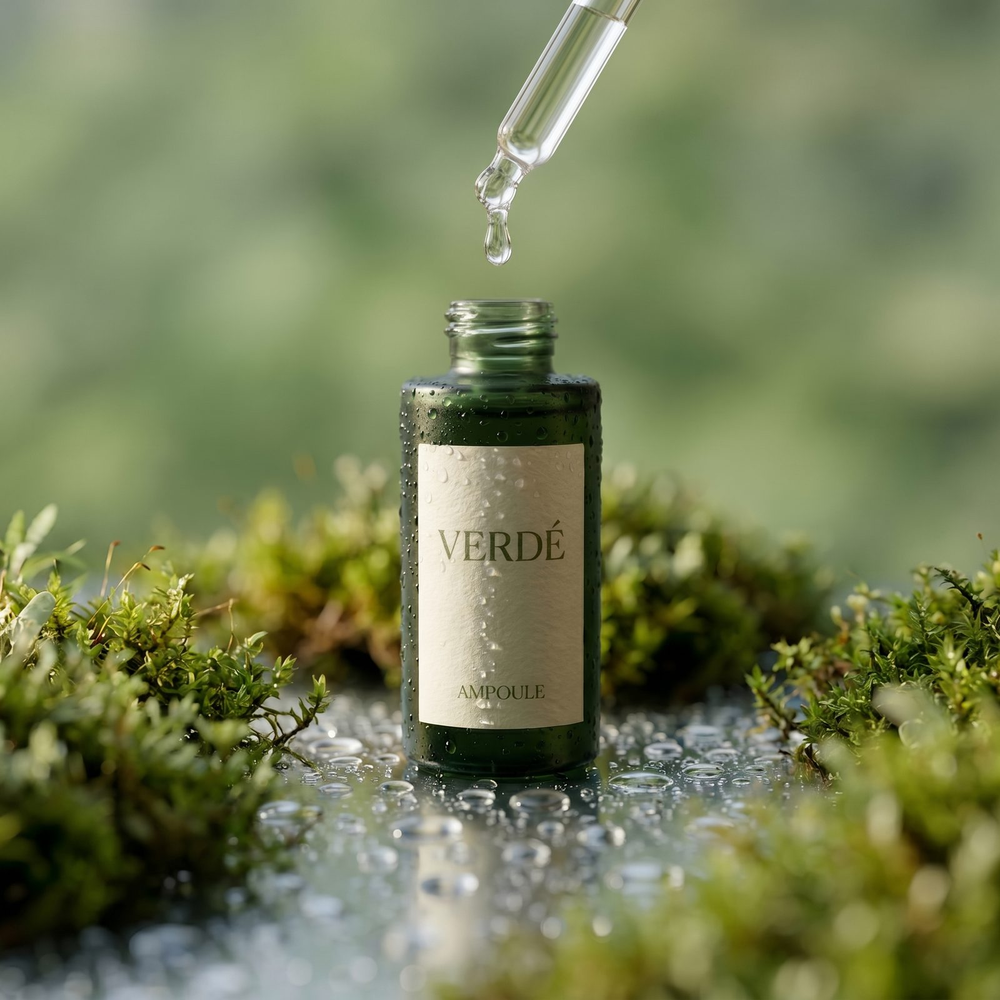
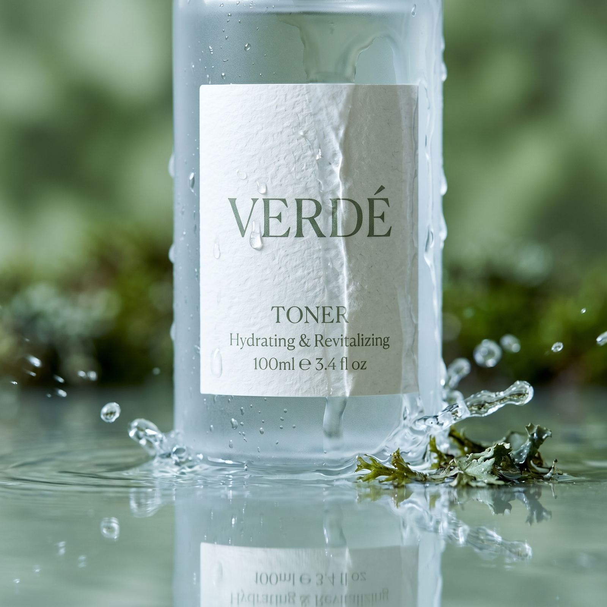
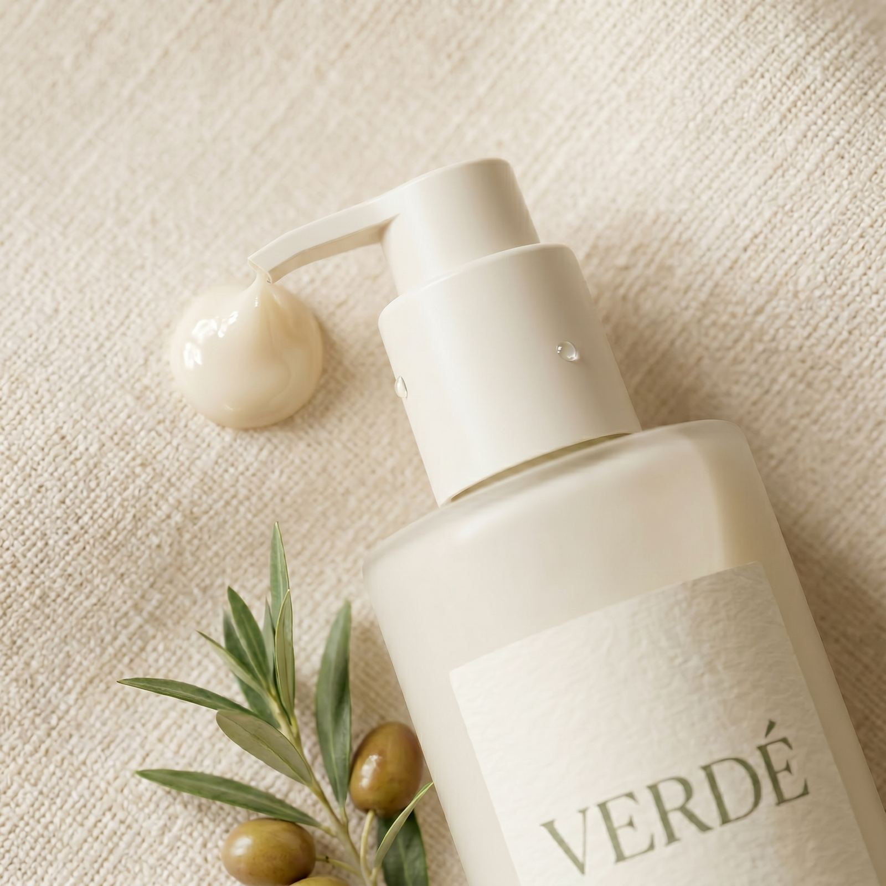
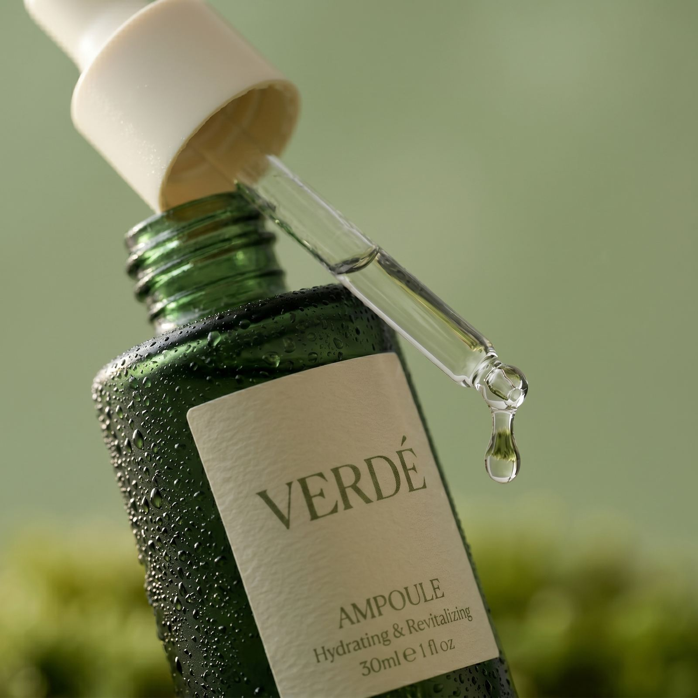
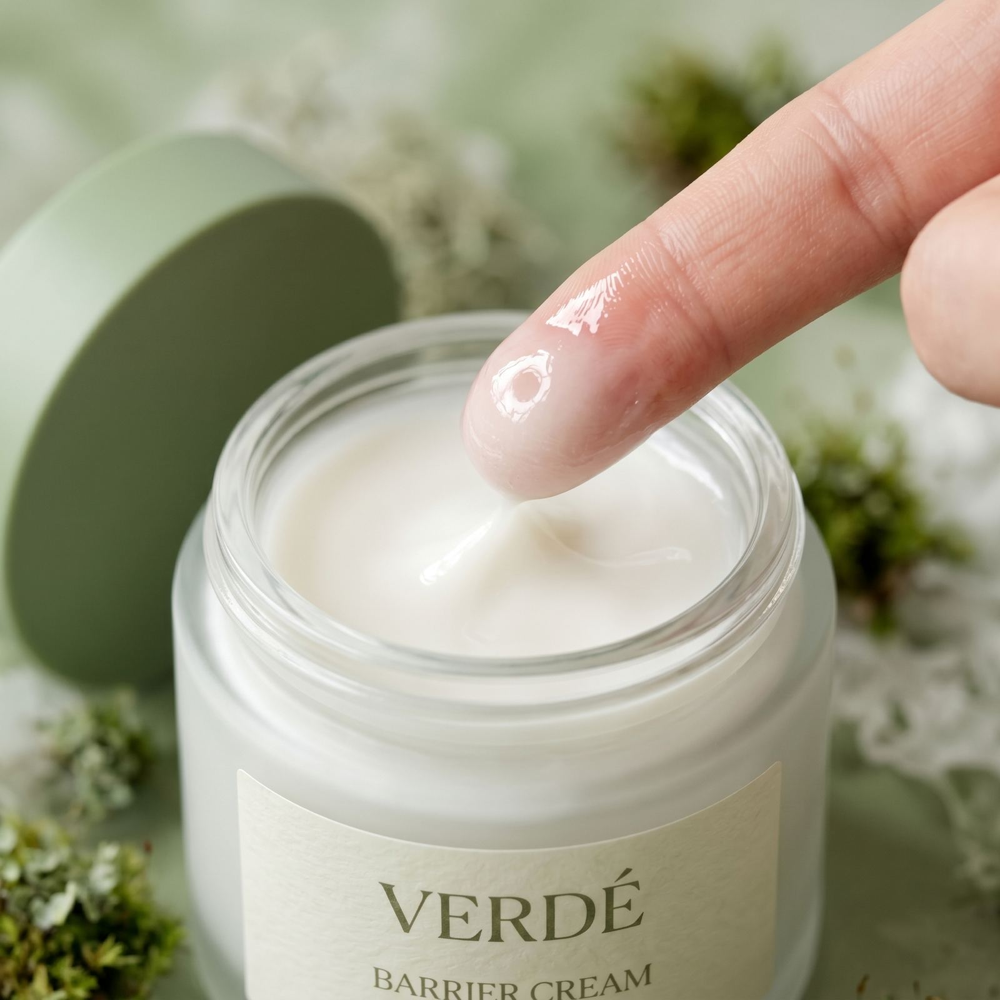

Forest Recovery
피부의 자생력을 믿다
VERDÉ는 성분을 더하는 대신 덜어냅니다. 숲이 스스로 회복하듯, 피부 본연의 힘을 깨우는 클린 뷰티.

VERDÉ는 성분을 더하는 대신 덜어냅니다. 숲이 스스로 회복하듯, 피부 본연의 힘을 깨우는 클린 뷰티.

VERDÉ는 불필요한 성분을 걷어내고, 피부가 본래 가진 회복력을 믿습니다. 성분 하나하나의 역할을 투명하게 설명하며, 진짜 필요한 것만 담은 포뮬러를 만듭니다.
피부 본연의 자생력과 장벽을 깨우는 미니멀 포뮬러로, 자극 없이 회복을 돕습니다.
꼭 필요한 성분만 남기고 모두 덜어낸 클린 포뮬러. 적을수록 피부에 이롭습니다.
전성분과 추출 원료, 민감성 피부 적합도까지 투명하게 공개해 믿고 쓰는 브랜드를 지향합니다.
VERDÉ 성분 사전에서 매일 새로운 식물 성분 이야기를 만나보세요. 역할과 추출 원료, 민감성 피부 적합도까지 한눈에 확인할 수 있습니다.
VERDÉ에서 가장 사랑받는 제품을 만나보세요.
인스타그램에 공유된 VERDÉ와 함께하는 순간들을 만나보세요.



